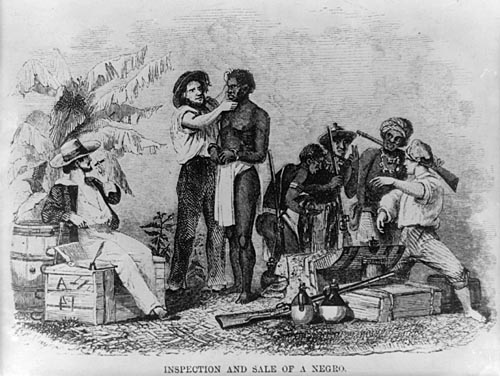
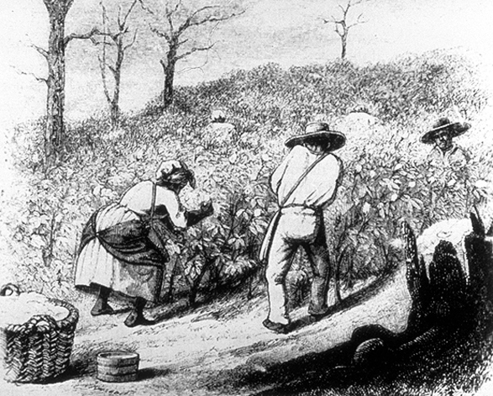

- Slavery has its roots in indentured servitude. In the early 1600s, it was legal for any non-Christian — black, Native American, or otherwise to be forced into servitude. The difference between being an indentured servant and a slave was that a servant had a chance to become free by converting to Christianity.
- Slavery became prominent in Virginia around 1640, when three servants escaped a plantation there. All of the escapists were caught, and two of them resumed their status as indentured servants. The third servant, John Punch, was made to “serve his said master or his assigns for the time of his natural life”, essentially making him a slave.
- Racial slavery spread because it erased the chances of a servant becoming free and rivaling his former master in business.
- Massachusetts became the first American colony to legalize slavery in 1641. In 1662, all children born to a slave mother in Virginia would become slaves by birth. By 1750, all of the American colonies had legalized slavery within their borders, with Georgia being the last. 
- One of the first rebellions against slavery began on September 9, 1739, when slaves marched from Stono, North Carolina towards Florida, where they hoped they would reach freedom. The slaves killed all of the whites along their way, and all of the rebels who were captured were executed.
- Slaves were mostly used for farm work. Early in American history, they were used to clear swamps and cultivate lands for rice. After Eli Whitney’s 1793 invention of the cotton gin, much more work was put towards cotton. 
- As more Africans had children in America, they became more familiar with European religion, and began to accept it as their own. Some slave owners taught their slaves about the Bible. As a result, many blacks became Christian (often Methodist). This lead to some slaves (e.g. Nat Turner) questioning their servitude.
Slave being inspected and sold
Slaves picking cotton on a plantation